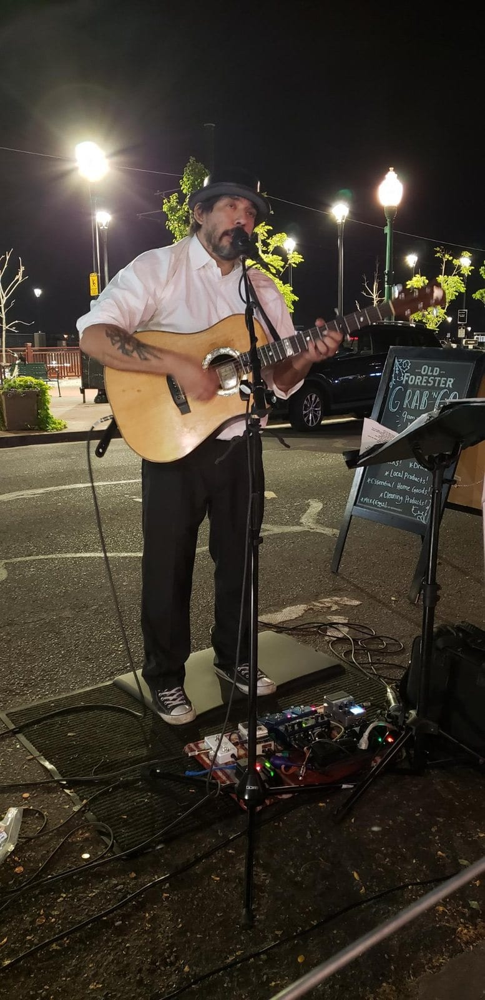
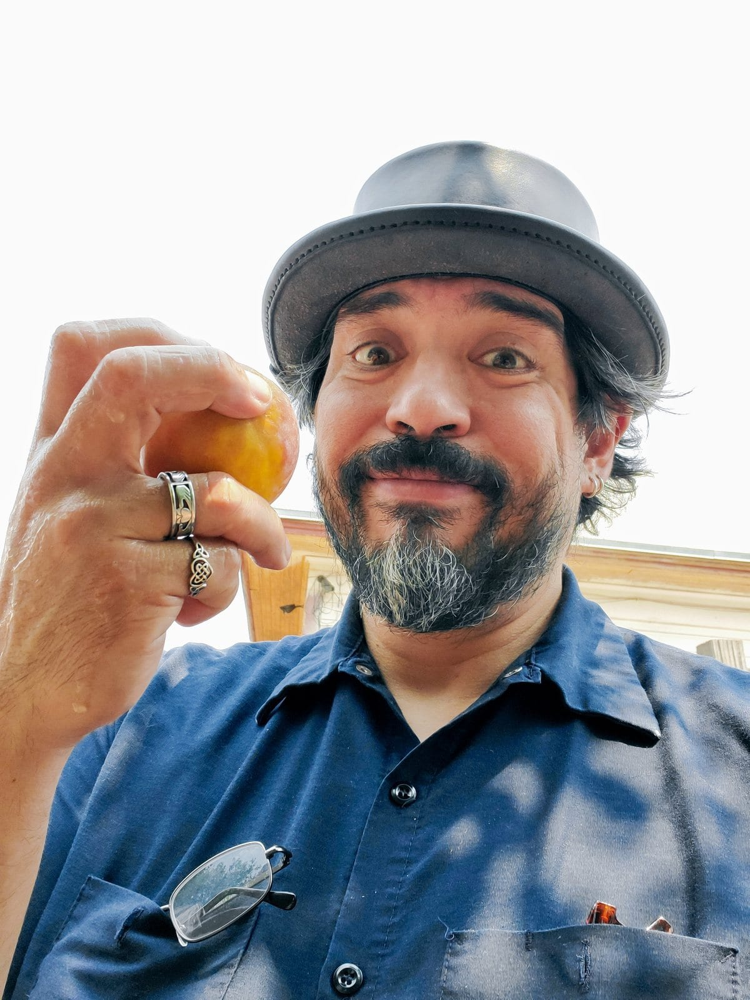
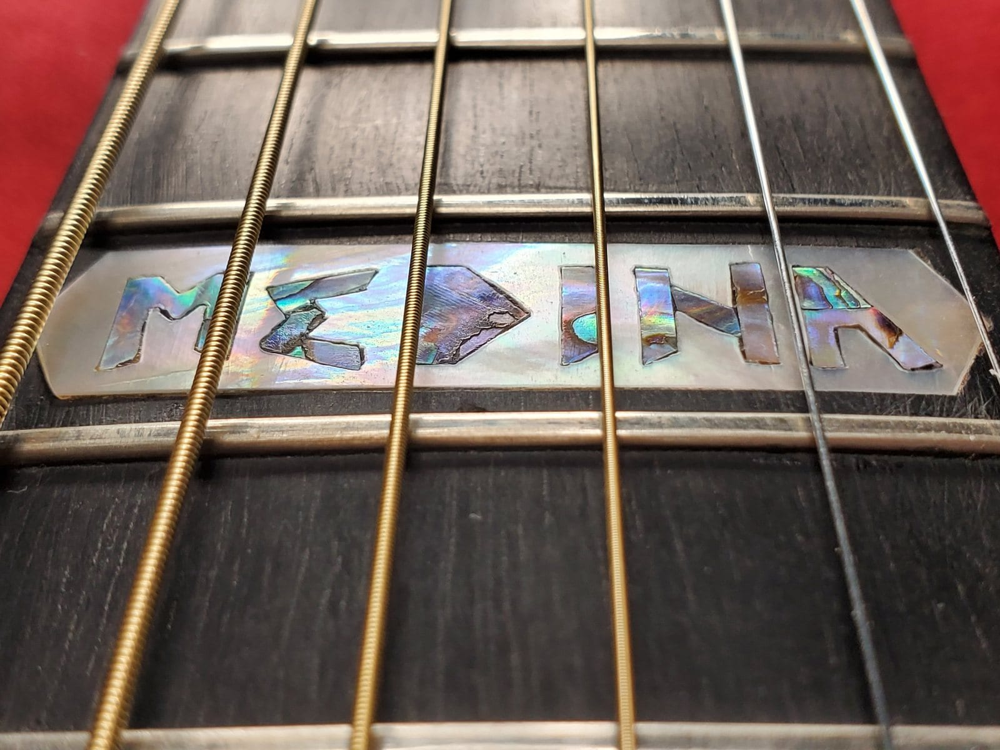

Blues, rock and roots
Tony Medina
Covers and originals, from one guitar up to a four-piece band.
Have you ever stopped mid-conversation because the singer in the corner turned out to be amazing? That’s Tony Medina, who sings The Thrill Is Gone with gravel in his voice and plays guitar with the rhythm of a funk player. He plays the blues and the rock and roll that came out of it, and he can play solo while people talk or bring a four-piece band to get people dancing.
We’re happy to tailor the music to your event, from the number of musicians to the songs and what they wear. Here’s how booking through Signet works.
Awards and press
Stages and credits
- Hosts the weekly Blues Jam at The Alley in Littleton (Since 2021)
- Has hosted open mics at The Cricket on the Hill, The D Note, Gennaro's and The Stardust Lounge in Denver, and in St. Louis, and now hosts at La Dolce Vita in Arvada
- No. 6 on ReverbNation's Denver singer-songwriter chart
Trusted and booked by
His song list goes from Freddie King and B.B. King to The Cars, Prince and the rock records of the seventies and nineties. Your guests will probably recognize nearly all of it.
Configurations
| Size | What it suits |
|---|---|
| SoloVoice and acoustic guitar | On his own, he's an easy pick for welcome drinks, patios and dinner, and your guests shouldn't have to raise their voices. |
| DuoVoice and guitar, plus percussion | A percussionist gives him a little more rhythm, and that's a nice touch at a patio event or a reception. |
| TrioVoice and guitar, bass, drums | If your venue is on the small side, the trio can still get people dancing. |
| QuartetThe trio plus a second guitar or keys | This is his full dance band. We'd suggest it for office parties and milestone birthdays. |
Send us your date and we’ll help you choose the size that works best.
Occasions
Perfect booking for
- Milestones and private parties
- He’s a great choice for a 50th or a 60th when your guests grew up on these songs. He can keep things quiet over dinner, and the full band can take over when you're ready to dance.
- Office holiday parties
- Classic rock goes over well at a company party, since most of your team will know these songs no matter when they grew up. Book the four-piece band if you want a dance floor, at a downtown Denver venue or in your own office.
- Retreat evenings in the mountains
- When the meetings are done, Tony can play the acoustic side of his song list solo or as a duo.
- Welcome drinks and rehearsal dinners
- On his own, Tony can play the night before the wedding or the hour after the ceremony, and he’s a great fit if you’d like a little grit in the music.
If you’re planning speeches or a program, we can work the music around them with your run of show. Want a general idea of what live music costs across Colorado? Take a look at our cost guide.
Song list
A sample of his songs.
You can watch him play most of these covers in the video clips below.
- Going DownFreddie King
- The Thrill Is GoneB.B. King
- Purple RainPrince
- DriveThe Cars
- Don’t Drink the WaterDave Matthews Band
- HeadlineTony Medina
- Breathe In DeepTony Medina
- How Love Saved My LifeTony Medina
He also plays sixties soul and nineties alternative.
Video Clips
Watch Tony Medina play blues and rock





Venues
We’d pick Tony Medina for live music at these venues.

Tony Medina questions
Still have a question? Our full question list may have the answer.
Will it get people dancing?
How loud is it?
Does he play originals at a private event?

Want Tony Medina at your event? Send us the date.
We’ll let you know if he’s available and what it would cost.
Want photos or video of your event? Add them to your booking.